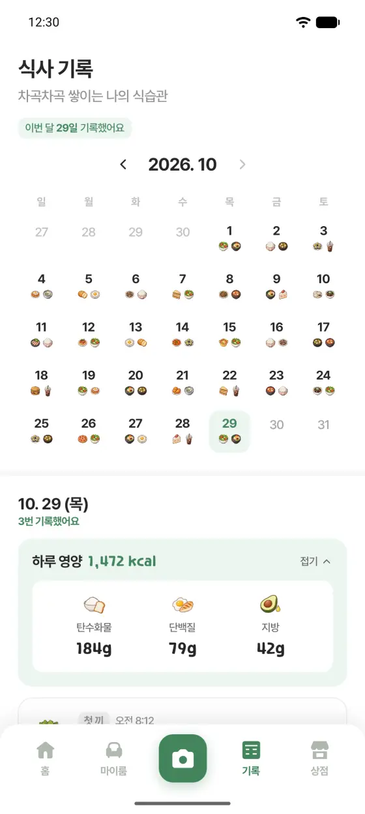
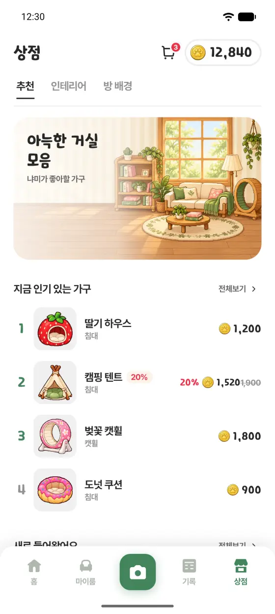

ニャミのもぐもぐシーンを見ます
食事を記録すると、ニャミがごはんを食べる短いもぐもぐシーンが流れます。

日本と韓国でAndroid版を配信中
食事の写真を1枚撮るとAIが料理を見つけてカロリーとPFCを記録します。月間カレンダーで自分の食習慣を確認でき、食べ方に応じて猫のニャミの体も変わります。
iPhone版はまだ公開前です
料理の写真を撮るとAIが食べ物を見つけてカロリーとPFCを記録します。残した食事は月間カレンダーで1か月まとめて見返せます。

食事を抜くとニャミはほっそりして、食べすぎるとぽっちゃりします。ほどよく食べるとちょうどいい姿になります。

食事を記録すると、ニャミがごはんを食べる短いもぐもぐシーンが流れます。
食事を記録すると、受信箱にごほうびの箱が届きます。

貯めたコインで、ショップから家具や部屋の背景を買えます。

ショップの家具や部屋の背景を選んで、ニャミの部屋を自分の好きなように模様替えできます。

ホーム画面のウィジェットでは、食事の時間になるたびにニャミが飼い主を待っています。